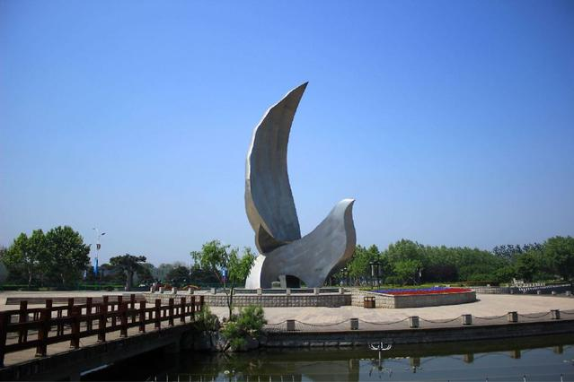
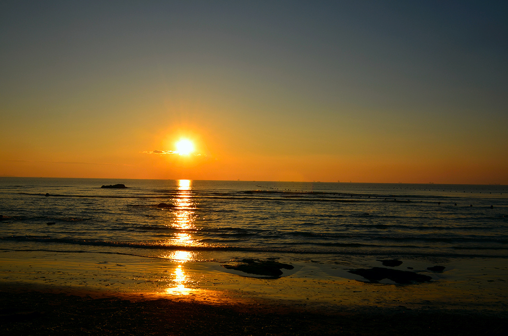
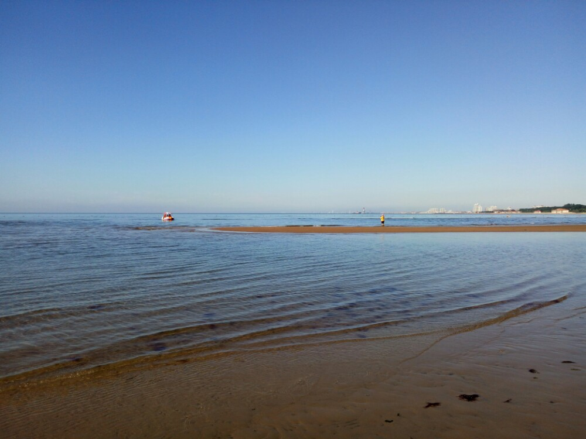
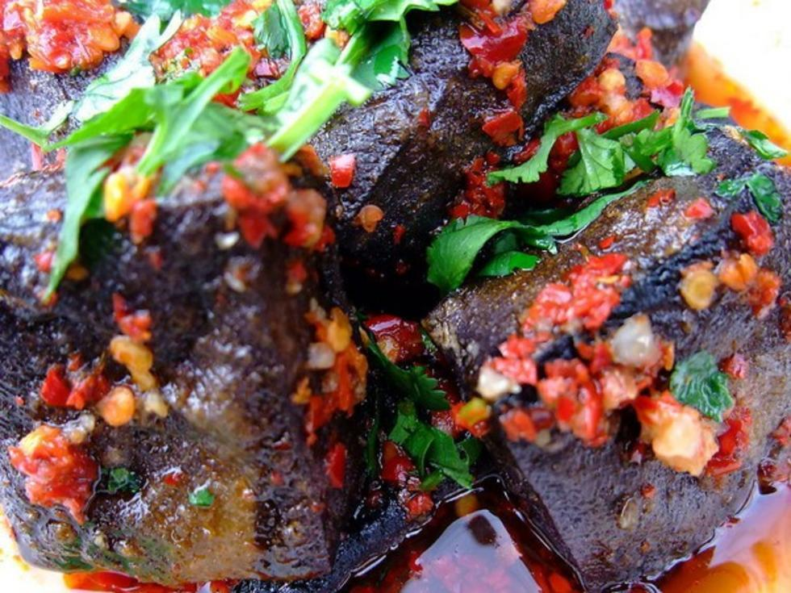

第一次真正意义上的旅行应该是在五六年前
和妈妈还有弟弟一起去秦皇岛
秦皇岛北戴河风景名胜
位于河北省秦皇岛市西南
南临渤海，北靠联峰山
因为它拥有避暑胜地北戴河
历史名城山海关
和天然不冻良港而驰名天下
因此主要是在北戴河看海玩耍

在北戴河海滨悠缓漫长的海岸线上
分布着沙质细软的缓坡海滩
这里海水清澈，盐度适中
是天然优良海滨浴场
景区内名胜古迹众多
其中名声最著者合称二十四景
海滨环境优美，风光秀丽

因为家在内地，因此对于大海很是向往
那还是我第一次看海呢，真的感觉历历在目
不过对于经常旅行的人来说
这应该也不是真正意义上的旅行吧
那是刚上大学，还不适应的时候
在元旦的时候去湘潭找朋友玩
在这个假期里
她带我在湘潭游玩了一番
当然主要是吃美食啦
 看着好吃嘛！
这是我俩都喜爱的，哈哈哈
等到自己经济独立了我会保持
一年至少一次的远途旅行
因此要努力学习为挣钱做准备